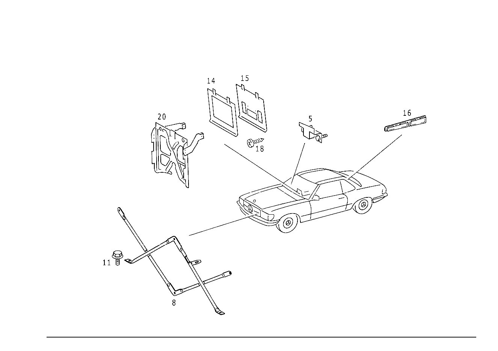

| № | Артикул | Название | Кол. | Примечание | Ограничение |
|---|---|---|---|---|---|
| 5 | A 107 620 19 14 | ДЕРЖАТЕЛЬ | 1 | FIRE WALL,BELOW INSTRUMENT PANEL,RIGHT Z 56.269/01, Z 56.269/02, Z 56.269/03, Z 56.269/04, Z 56.269/05, Z 56.269/06, Z 56.269/07, Z 56.269/10 [402] БОЛЬШЕ НЕ ПОСТАВЛЯЕТСЯ | |
| 8 | A 107 620 02 85 | Распорка | 1 | BETWEEN STIFFENING AND SIDE MEMBER Z 56.269/05, Z 56.269/07, Z 56.269/10 | |
| 11 | N 910105 006002 | Винт с 6-гранной головкой | 4 | STRUT TO STIFFENING; M6X12 Z 56.269/05, Z 56.269/07, Z 56.269/10 | |
| 14 | A 107 680 63 39 | НАКЛАДКА | 1 | СИСТЕМА АВТОМАТИЧЕСКОГО КЛИМАТ\-КОНТРОЛЯ Z 56.269/01, Z 56.269/03, Z 56.269/05, Z 56.269/10 [152] ZEBRANO,CAUCASIAN WALNUT SHADE, VENEER NO. 8273 | |
| 15 | A 107 680 89 07 | ПАНЕЛЬ | 1 | СИСТЕМА АВТОМАТИЧЕСКОГО КЛИМАТ\-КОНТРОЛЯ Z 56.269/05, Z 56.269/10 [152] ZEBRANO,CAUCASIAN WALNUT SHADE, VENEER NO. 8273 [181] UO TO CHASSIS 107.042 017655 .045 029313 .046 003556 | |
| 15 | A 107 680 89 07 | ПАНЕЛЬ | 1 | Z 56.269/05, Z 56.269/10 [154] KNOTTED WALNUT ENEER NO.8272 [182] FROM CHASSIS 107.042 017656 .045 029314 .046 003557 | |
| 18 | N 007981 003335 | Шуруп | - | Z 56.269/05, Z 56.269/10 | |
| 18 | N 007981 003203 | Шуруп | 2 | OPERATING UNIT TO COVERING,TOP Z 56.269/05, Z 56.269/10 | |
| 20 | A 107 680 02 56 | ПОДПОРКА | 1 | ПРИБОРН. ПАНЕЛЬ, ЦЕНТР. Z 56.269/01, Z 56.269/02, Z 56.269/03, Z 56.269/04, Z 56.269/05, Z 56.269/06, Z 56.269/07, Z 56.269/10 [157] НАЧИНАЯ С ШАССИ СМ. СТАНДАРТ.ИСПОЛНЕНИЕ | |
| 24 | A 000 800 11 75 | Исполнительный элемент | 2 | Z 56.269/01, Z 56.269/02, Z 56.269/03, Z 56.269/04, Z 56.269/05, Z 56.269/06, Z 56.269/07, Z 56.269/10 | |
| 28 | A 000 800 22 75 | Исполнительный элемент | 2 | Z 56.269/01, Z 56.269/02, Z 56.269/03, Z 56.269/04, Z 56.269/05, Z 56.269/06, Z 56.269/07, Z 56.269/10 [157] НАЧИНАЯ С ШАССИ СМ. СТАНДАРТ.ИСПОЛНЕНИЕ | |
| 31 | A 107 805 08 74 | ТЯГА | 2 | TO VACUUM ELEMENT Z 56.269/01, Z 56.269/02, Z 56.269/03, Z 56.269/04, Z 56.269/05, Z 56.269/06, Z 56.269/07, Z 56.269/10 | |
| 33 | A 107 805 10 74 | ТЯГА | 2 | TO VACUUM ELEMENT Z 56.269/01, Z 56.269/02, Z 56.269/03, Z 56.269/04, Z 56.269/05, Z 56.269/06, Z 56.269/07, Z 56.269/10 [402] БОЛЬШЕ НЕ ПОСТАВЛЯЕТСЯ [157] НАЧИНАЯ С ШАССИ СМ. СТАНДАРТ.ИСПОЛНЕНИЕ | |
| 34 | A 107 805 06 74 | Тяга переключения передач | 1 | TO VACUUM ELEMENT Z 56.269/01, Z 56.269/02, Z 56.269/03, Z 56.269/04, Z 56.269/05, Z 56.269/06, Z 56.269/07, Z 56.269/10 [402] БОЛЬШЕ НЕ ПОСТАВЛЯЕТСЯ [161] FROM CHASSIS 107.022 005571 107.023 012700 107.024 022843 107.026 000174 107.042 004555 107.043 013752 | |
| 36 | N 007338 004205 | Заклепка | 2 | Z 56.269/01, Z 56.269/02, Z 56.269/03, Z 56.269/04, Z 56.269/05, Z 56.269/06, Z 56.269/07, Z 56.269/10 [157] НАЧИНАЯ С ШАССИ СМ. СТАНДАРТ.ИСПОЛНЕНИЕ | |
| 36 | N 007338 004205 | Заклепка | 1 | Z 56.269/01, Z 56.269/02, Z 56.269/03, Z 56.269/04, Z 56.269/05, Z 56.269/06, Z 56.269/07, Z 56.269/10 [161] FROM CHASSIS 107.022 005571 107.023 012700 107.024 022843 107.026 000174 107.042 004555 107.043 013752 | |
| 38 | A 107 805 01 71 | БОЛТ | 2 | Z 56.269/01, Z 56.269/02, Z 56.269/03, Z 56.269/04, Z 56.269/05, Z 56.269/06, Z 56.269/07, Z 56.269/10 [157] НАЧИНАЯ С ШАССИ СМ. СТАНДАРТ.ИСПОЛНЕНИЕ | |
| 43 | N 006799 003202 | Стопорная шайба | 2 | Z 56.269/01, Z 56.269/02, Z 56.269/03, Z 56.269/04, Z 56.269/05, Z 56.269/06, Z 56.269/07, Z 56.269/10 | |
| 49 | A 107 805 11 14 | ДЕРЖАТЕЛЬ | 1 | СЛЕВА Z 56.269/01, Z 56.269/02, Z 56.269/03, Z 56.269/04, Z 56.269/05, Z 56.269/06, Z 56.269/07, Z 56.269/10 [157] НАЧИНАЯ С ШАССИ СМ. СТАНДАРТ.ИСПОЛНЕНИЕ | |
| 49 | A 107 805 12 14 | ДЕРЖАТЕЛЬ | 1 | СПРАВА Z 56.269/01, Z 56.269/02, Z 56.269/03, Z 56.269/04, Z 56.269/05, Z 56.269/06, Z 56.269/07, Z 56.269/10 [157] НАЧИНАЯ С ШАССИ СМ. СТАНДАРТ.ИСПОЛНЕНИЕ | |
| 55 | A 116 987 05 41 | Эластомерная шайба | 6 | VACUUM ELEMENT TO BRACKET Z 56.269/01, Z 56.269/02, Z 56.269/03, Z 56.269/04, Z 56.269/05, Z 56.269/06, Z 56.269/07, Z 56.269/10 [157] НАЧИНАЯ С ШАССИ СМ. СТАНДАРТ.ИСПОЛНЕНИЕ | |
| 58 | A 000 994 96 45 | предохранитель | 6 | VACUUM ELEMENT TO BRACKET Z 56.269/01, Z 56.269/02, Z 56.269/03, Z 56.269/04, Z 56.269/05, Z 56.269/06, Z 56.269/07, Z 56.269/10 [157] НАЧИНАЯ С ШАССИ СМ. СТАНДАРТ.ИСПОЛНЕНИЕ | |
| 61 | N 007981 005209 | Шуруп | 4 | VACUUM ELEMENT TO BRACKET; B5,5X16 Z 56.269/01, Z 56.269/02, Z 56.269/03, Z 56.269/04, Z 56.269/05, Z 56.269/06, Z 56.269/07, Z 56.269/10 [157] НАЧИНАЯ С ШАССИ СМ. СТАНДАРТ.ИСПОЛНЕНИЕ | |
| 64 | N 000137 006204 | Пружинная шайба | 4 | VACUUM ELEMENT TO BRACKET Z 56.269/01, Z 56.269/02, Z 56.269/03, Z 56.269/04, Z 56.269/05, Z 56.269/06, Z 56.269/07, Z 56.269/10 [157] НАЧИНАЯ С ШАССИ СМ. СТАНДАРТ.ИСПОЛНЕНИЕ | |
| 67 | N 918002 004000 | Пружинный зажим | 1 | VACUUM ELEMENT с BRACKET TO INSIDE CENTRAL PART FLAP Z 56.269/01, Z 56.269/02, Z 56.269/03, Z 56.269/04, Z 56.269/05, Z 56.269/06, Z 56.269/07, Z 56.269/10 [157] НАЧИНАЯ С ШАССИ СМ. СТАНДАРТ.ИСПОЛНЕНИЕ | |
| 67 | N 918002 004001 | Пружинный зажим | 1 | VACUUM ELEMENT с BRACKET TO INSIDE CENTRAL PART FLAP Z 56.269/01, Z 56.269/02, Z 56.269/03, Z 56.269/04, Z 56.269/05, Z 56.269/06, Z 56.269/07, Z 56.269/10 [157] НАЧИНАЯ С ШАССИ СМ. СТАНДАРТ.ИСПОЛНЕНИЕ | |
| 74 | A 003 988 50 78 | Скоба | 2 | VACUUM ELEMENT с BRACKET TO INSIDE CENTRAL PART FLAP Z 56.269/01, Z 56.269/02, Z 56.269/03, Z 56.269/04, Z 56.269/05, Z 56.269/06, Z 56.269/07, Z 56.269/10 [157] НАЧИНАЯ С ШАССИ СМ. СТАНДАРТ.ИСПОЛНЕНИЕ | |
| 81 | A 123 800 05 78 | - КЛАПАН | 3 | Z 56.269/01, Z 56.269/02, Z 56.269/03, Z 56.269/04, Z 56.269/05, Z 56.269/06, Z 56.269/07, Z 56.269/10 | |
| 85 | A 117 078 01 45 | - Штуцер ответвления | NB | Y\-ОБРАЗН. ФОРМА Z 56.269/01, Z 56.269/02, Z 56.269/03, Z 56.269/04, Z 56.269/05, Z 56.269/06, Z 56.269/07, Z 56.269/10 | |
| 89 | A 117 078 00 45 | - Штуцер ответвления | 5 | ТРОЙНИК Z 56.269/01, Z 56.269/02, Z 56.269/03, Z 56.269/04, Z 56.269/05, Z 56.269/06, Z 56.269/07, Z 56.269/10 | |
| 93 | A 007 997 61 82 | - Шланг | NB | 50mm; 9X2.75 MM Z 56.269/01, Z 56.269/02, Z 56.269/03, Z 56.269/04, Z 56.269/05, Z 56.269/06, Z 56.269/07, Z 56.269/10 [404] ЗАКАЗЫВАТЬ ПОГОННЫМИ МЕТРАМИ | |
| 93 | A 007 997 61 82 | - Шланг | 1 | К РАСПРЕДЕЛИТЕЛЮ 40 MM; 9X2.75 MM Z 56.269/01, Z 56.269/02, Z 56.269/03, Z 56.269/04, Z 56.269/05, Z 56.269/06, Z 56.269/07, Z 56.269/10 [404] ЗАКАЗЫВАТЬ ПОГОННЫМИ МЕТРАМИ | |
| 93 | A 007 997 61 82 | - Шланг | 1 | 70 MM; 9X2.75 MM Z 56.269/01, Z 56.269/02, Z 56.269/03, Z 56.269/04, Z 56.269/05, Z 56.269/06, Z 56.269/07, Z 56.269/10 [404] ЗАКАЗЫВАТЬ ПОГОННЫМИ МЕТРАМИ | |
| 93 | A 007 997 61 82 | - Шланг | 2 | *** 30mm; 9X2.75 MM Z 56.269/01, Z 56.269/02, Z 56.269/03, Z 56.269/04, Z 56.269/05, Z 56.269/06, Z 56.269/07, Z 56.269/10 [404] ЗАКАЗЫВАТЬ ПОГОННЫМИ МЕТРАМИ | |
| 95 | A 008 997 38 82 | - Шланг | 1 | 50mm Z 56.269/01, Z 56.269/02, Z 56.269/03, Z 56.269/04, Z 56.269/05, Z 56.269/06, Z 56.269/07, Z 56.269/10 [404] ЗАКАЗЫВАТЬ ПОГОННЫМИ МЕТРАМИ | |
| 97 | A 001 997 83 90 | - Кабельная стяжка | NB | 4.6X279 MM Z 56.269/01, Z 56.269/02, Z 56.269/03, Z 56.269/04, Z 56.269/05, Z 56.269/06, Z 56.269/07, Z 56.269/10 | |
| 107 | A 000 987 11 45 | - Защитный колпачок | 1 | Z 56.269/01, Z 56.269/02, Z 56.269/03, Z 56.269/04, Z 56.269/05, Z 56.269/06, Z 56.269/07, Z 56.269/10 | |
| 110 | A 001 997 41 90 | Кабельная стяжка | 2 | 7X100 MM Z 56.269/01, Z 56.269/02, Z 56.269/03, Z 56.269/04, Z 56.269/05, Z 56.269/06, Z 56.269/07, Z 56.269/10 | |
| 111 | A 116 997 08 90 | Кабельная стяжка | 1 | 7X140 MM Z 56.269/01, Z 56.269/02, Z 56.269/03, Z 56.269/04, Z 56.269/05, Z 56.269/06, Z 56.269/07, Z 56.269/10 | |
| 115 | A 116 988 25 78 | СКОБА | 1 | Z 56.269/01, Z 56.269/02, Z 56.269/03, Z 56.269/04, Z 56.269/05, Z 56.269/06, Z 56.269/07, Z 56.269/10 [402] БОЛЬШЕ НЕ ПОСТАВЛЯЕТСЯ | |
| 117 | N 007976 004215 | Шуруп | 2 | 4.8X16 Z 56.269/01, Z 56.269/02, Z 56.269/03, Z 56.269/04, Z 56.269/05, Z 56.269/06, Z 56.269/07, Z 56.269/10 | |
| 119 | N 007981 004254 | Шуруп | 1 | 4.2X19 Z 56.269/01, Z 56.269/02, Z 56.269/03, Z 56.269/04, Z 56.269/05, Z 56.269/06, Z 56.269/07, Z 56.269/10 | |
| 122 | A 094 990 63 08 | Шайба | 1 | Z 56.269/01, Z 56.269/02, Z 56.269/03, Z 56.269/04, Z 56.269/05, Z 56.269/06, Z 56.269/07, Z 56.269/10 | |
| 126 | A 107 806 04 03 | ПРОВОД | 1 | FROM ELEMENT для WATER FAUCET TO DISTRIBUTOR Z 56.269/01, Z 56.269/02, Z 56.269/03, Z 56.269/04, Z 56.269/05, Z 56.269/06, Z 56.269/07, Z 56.269/10 [402] БОЛЬШЕ НЕ ПОСТАВЛЯЕТСЯ | |
| 131 | A 107 806 08 01 | ПРОВОД | 1 | FROM ELEMENT для WATER FAUCET TO DISTRIBUTOR Z 56.269/01, Z 56.269/02, Z 56.269/03, Z 56.269/04, Z 56.269/05, Z 56.269/06, Z 56.269/07, Z 56.269/10 [402] БОЛЬШЕ НЕ ПОСТАВЛЯЕТСЯ | |
| 135 | A 000 997 07 52 | ШЛАНГ | - | Z 56.269/01, Z 56.269/02, Z 56.269/03, Z 56.269/04, Z 56.269/05, Z 56.269/06, Z 56.269/07, Z 56.269/10 | |
| 135 | A 000 997 65 52 | Шланг | 0 | MEDIUM GREEN/YELLOW Z 56.269/01, Z 56.269/02, Z 56.269/03, Z 56.269/04, Z 56.269/05, Z 56.269/06, Z 56.269/07, Z 56.269/10 [404] ЗАКАЗЫВАТЬ ПОГОННЫМИ МЕТРАМИ | |
| 135 | A 000 997 65 52 | Шланг | 1 | FROM Y\-SHAPE DISTRIBUTOR TO COMINED TEMPERATURE & VACUUM SWITCH 1220 MM Z 56.269/01, Z 56.269/02, Z 56.269/03, Z 56.269/04, Z 56.269/05, Z 56.269/06, Z 56.269/07, Z 56.269/10 [404] ЗАКАЗЫВАТЬ ПОГОННЫМИ МЕТРАМИ | |
| 136 | A 000 997 74 52 | ШЛАНГ | 0 | DARK RED/GREEN Z 56.269/01, Z 56.269/02, Z 56.269/03, Z 56.269/04, Z 56.269/05, Z 56.269/06, Z 56.269/07, Z 56.269/10 [404] ЗАКАЗЫВАТЬ ПОГОННЫМИ МЕТРАМИ | |
| 136 | A 000 997 74 52 | ШЛАНГ | 1 | FROM ENGINE COMPARTMENT TO AUTO. AIR CONDIT. TEMPERAT.REGULATOR DISTRIBUTOR 1550 MM Z 56.269/05, Z 56.269/10 [404] ЗАКАЗЫВАТЬ ПОГОННЫМИ МЕТРАМИ | |
| 136 | A 000 158 14 35 | Трубопровод | 1 | FROM ELECTRIC CHANGE\-OVER VALVE TO RIGHT LEGROOM FLAP VACUUM ELEMENT 1;400 MM; 4X1mm Z 56.269/05, Z 56.269/10 [404] ЗАКАЗЫВАТЬ ПОГОННЫМИ МЕТРАМИ | |
| 136 | A 000 158 14 35 | Трубопровод | 1 | FROM NO.2 ELECTRIC CHANGE\-OVER VALVE TO DEFROSTER NOZZLE VACUUM ELEMENT 700 MM; 4X1mm Z 56.269/05, Z 56.269/10 [404] ЗАКАЗЫВАТЬ ПОГОННЫМИ МЕТРАМИ | |
| 136 | A 000 158 14 35 | Трубопровод | 1 | FROM NO.3 ELECTRIC CHANGE\-OVER VALVE TO DEFROSTER NOZZLE VACUUM ELEMENT 700 MM; 4X1mm Z 56.269/05, Z 56.269/10 [404] ЗАКАЗЫВАТЬ ПОГОННЫМИ МЕТРАМИ | |
| 136 | A 000 158 14 35 | Трубопровод | 1 | 650 MM; 4X1mm Z 56.269/05, Z 56.269/10 [404] ЗАКАЗЫВАТЬ ПОГОННЫМИ МЕТРАМИ | |
| 138 | A 126 817 02 20 | ТАБЛИЧКА С УКАЗАНИЯМИ | 1 | Z 56.269/05, Z 56.269/10 [402] БОЛЬШЕ НЕ ПОСТАВЛЯЕТСЯ | |
| 138 | A 126 817 03 20 | Табличка | 1 | Z 56.269/05, Z 56.269/10 | |
| 138 | A 126 817 04 20 | ТАБЛИЧКА С УКАЗАНИЯМИ | 1 | Z 56.269/05, Z 56.269/10 [402] БОЛЬШЕ НЕ ПОСТАВЛЯЕТСЯ | |
| 142 | A 000 822 10 03 | Регулятор температуры | 1 | (РЕГУЛЯТОР ТЕМПЕРАТУРЫ) Z 56.269/05, Z 56.269/10 | |
| 144 | A 000 822 11 03 | Регулятор | 1 | (РЕГУЛЯТ.ВЕНТИЛ.) Z 56.269/05, Z 56.269/10 | |
| 146 | N 007976 004217 | Шуруп | - | Z 56.269/05, Z 56.269/10 | |
| 146 | N 914128 004303 | Шуруп | 2 | РЕГУЛ. ТЕМПЕРАТУРЫ НА ДЕРЖАТ.; 4.8X9.5 MM Z 56.269/05, Z 56.269/10 | |
| 147 | A 107 800 22 78 | Переключающий клапан | 1 | 4\-СЕКЦ. Z 56.269/05, Z 56.269/10 | |
| 148 | N 007981 004339 | Шуруп | - | Z 56.269/05, Z 56.269/10 | |
| 148 | N 000000 000459 | Шуруп | 1 | РЕГУЛ. ТЕМПЕРАТУРЫ НА ДЕРЖАТ.; MBN 10169 4.8 X 9.5 Z 56.269/05, Z 56.269/10 | |
| 150 | A 007 997 61 82 | Шланг | 1 | FROM ELECTRIC CHANGE\-OVER VALVE TO RIGHT LEGROOM FLAP VACUUM ELEMENT 1;50 MM; 9X2.75 MM Z 56.269/05, Z 56.269/10 [404] ЗАКАЗЫВАТЬ ПОГОННЫМИ МЕТРАМИ | |
| 150 | A 007 997 61 82 | Шланг | 1 | FROM NO.2 ELECTRIC CHANGE\-OVER VALVE TO DEFROSTER NOZZLE VACUUM ELEMENT 50 MMM; 9X2.75 MM Z 56.269/05, Z 56.269/10 [404] ЗАКАЗЫВАТЬ ПОГОННЫМИ МЕТРАМИ | |
| 150 | A 007 997 61 82 | Шланг | 1 | FROM NO.3 ELECTRIC CHANGE\-OVER VALVE TO DEFROSTER NOZZLE VACUUM ELEMENT 50mm; 9X2.75 MM Z 56.269/05, Z 56.269/10 [404] ЗАКАЗЫВАТЬ ПОГОННЫМИ МЕТРАМИ | |
| 150 | A 007 997 61 82 | Шланг | 1 | 50mm; 9X2.75 MM Z 56.269/05, Z 56.269/10 [404] ЗАКАЗЫВАТЬ ПОГОННЫМИ МЕТРАМИ | |
| 150 | A 007 997 61 82 | Шланг | 1 | ПЕРЕКЛЮЧ. КЛАПАН 1;50 MM; 9X2.75 MM Z 56.269/05, Z 56.269/10 [404] ЗАКАЗЫВАТЬ ПОГОННЫМИ МЕТРАМИ | |
| 151 | A 000 800 04 78 | Переключающий клапан | 4 | Z 56.269/05, Z 56.269/10 | |
| 153 | A 126 997 23 81 | втулка | 1 | ПЕРЕКЛЮЧ. КЛАПАН Z 56.269/05, Z 56.269/10 | |
| 154 | A 201 805 00 75 | Дроссель | 1 | ПЕРЕКЛЮЧ. КЛАПАН Z 56.269/05, Z 56.269/10 | |
| 155 | N 007981 003214 | Шуруп | 4 | B3,9X9,5 Z 56.269/05, Z 56.269/10 | |
| 156 | A 126 805 03 22 | Распределитель | 1 | Z 56.269/05, Z 56.269/10 | |
| 157 | A 126 805 05 22 | Распределитель | 1 | Z 56.269/05, Z 56.269/10 | |
| 158 | A 107 827 12 14 | ДЕРЖАТЕЛЬ | 1 | (РЕГУЛЯТ.ВЕНТИЛ.) Z 56.269/05, Z 56.269/10 | |
| 159 | A 107 830 21 62 | КОЖУХ СИСТЕМЫ ОТОПЛЕНИЯ | 1 | СИСТЕМА АВТОМАТИЧЕСКОГО КЛИМАТ\-КОНТРОЛЯ Z 56.269/05, Z 56.269/06, Z 56.269/07, Z 56.269/10 [402] БОЛЬШЕ НЕ ПОСТАВЛЯЕТСЯ | |
| 159 | A 107 830 25 62 | КОЖУХ СИСТЕМЫ ОТОПЛЕНИЯ | 1 | СИСТЕМА АВТОМАТИЧЕСКОГО КЛИМАТ\-КОНТРОЛЯ Z 56.269/05, Z 56.269/10 | |
| 162 | A 107 835 03 01 | - ТЕПЛООБМЕННИК | 1 | Z 56.269/01, Z 56.269/02, Z 56.269/03, Z 56.269/04, Z 56.269/05, Z 56.269/06, Z 56.269/07, Z 56.269/10 | |
| 162 | A 002 835 33 01 | - Теплообм. | 1 | Z 56.269/05, Z 56.269/10 | |
| 167 | A 000 835 21 34 | - Пружина | 5 | Z 56.269/01, Z 56.269/02, Z 56.269/03, Z 56.269/04, Z 56.269/05, Z 56.269/06, Z 56.269/07, Z 56.269/10 | |
| 167 | A 000 835 19 34 | - Скоба | 2 | Z 56.269/01, Z 56.269/02, Z 56.269/03, Z 56.269/04, Z 56.269/05, Z 56.269/06, Z 56.269/07, Z 56.269/10 | |
| 169 | A 000 800 32 75 | - Исполнительный элемент | 1 | DEFROSTER NOZZLE FLAP Z 56.269/01, Z 56.269/02, Z 56.269/03, Z 56.269/04, Z 56.269/05, Z 56.269/06, Z 56.269/07, Z 56.269/10 [161] FROM CHASSIS 107.022 005571 107.023 012700 107.024 022843 107.026 000174 107.042 004555 107.043 013752 | |
| 179 | A 116 805 00 77 | - Жиклер | 1 | Z 56.269/01, Z 56.269/02, Z 56.269/03, Z 56.269/04, Z 56.269/05, Z 56.269/06, Z 56.269/07, Z 56.269/10 [157] НАЧИНАЯ С ШАССИ СМ. СТАНДАРТ.ИСПОЛНЕНИЕ | |
| 184 | A 115 997 06 81 | - втулка | 1 | 23 MM Z 56.269/01, Z 56.269/02, Z 56.269/03, Z 56.269/04, Z 56.269/05, Z 56.269/06, Z 56.269/07, Z 56.269/10 [157] НАЧИНАЯ С ШАССИ СМ. СТАНДАРТ.ИСПОЛНЕНИЕ | |
| 186 | N 007976 004212 | - Шуруп | 1 | Z 56.269/01, Z 56.269/02, Z 56.269/03, Z 56.269/04, Z 56.269/05, Z 56.269/06, Z 56.269/07, Z 56.269/10 [157] НАЧИНАЯ С ШАССИ СМ. СТАНДАРТ.ИСПОЛНЕНИЕ | |
| 188 | A 003 820 24 10 | - Температурный выключатель | 1 | РЕЛЕ ТЕМПЕРАТУРЫ Z 56.269/01, Z 56.269/02, Z 56.269/03, Z 56.269/04, Z 56.269/05, Z 56.269/06, Z 56.269/07, Z 56.269/10 [409] ПРИ МОНТАЖЕ ПОДОГНАТЬ ПО МЕСТУ | |
| 191 | A 116 821 00 76 | - ШУМОИЗОЛЯЦИЯ | 1 | Z 56.269/01, Z 56.269/02, Z 56.269/03, Z 56.269/04, Z 56.269/05, Z 56.269/06, Z 56.269/07, Z 56.269/10 [805] ДО ШАССИ НОВОЙ КОМПЛЕКТАЦИИ 9/84 107 A 016566 NOT FOR AUSTRALIA,JAPAN,SWEDEN,SWITZERLAND EXCEPT FOR A 015665,A 015670,A 015691,A 015799,A 016094,A 016097,A 016263,A 016274,A 016363,A 016381,A 016387,A 016397,A 016401,A 016405, A 016408,A 016415,A 016418,A 016424,A 016427,A 016430,A 016436,A 016438,A 016443,A 016447,A 016449,A 016453,A 016459,A 016464, A 016475,A 016477,A 016480,A 016482,A 016484,A 016485,A 016487,A 016489,A 016491,A 016501,A 016504,A 016505,A 016507,A 016509, A 016511,A 016514,A 016516-A 016520,A 016525,A 016526,A 016528-A 016532,A 016534,A 016535,A 016537,A 016543. ALSO INSTALLED ON A 021354 107 AUSTRALIA A 016630 107 JAPAN A 016345 EXCEPT FOR A 015904,A 016138,A 016267,A 016292. 107 SWEDEN A 015666 EXCEPT FOR A 015491 107 SWITZERLAND A 015897 EXCEPT FOR A 009523 [402] БОЛЬШЕ НЕ ПОСТАВЛЯЕТСЯ | |
| 191 | A 126 821 00 76 | - ШУМОИЗОЛЯЦИЯ | 1 | Z 56.269/01, Z 56.269/02, Z 56.269/03, Z 56.269/04, Z 56.269/05, Z 56.269/06, Z 56.269/07, Z 56.269/10 [806] НАЧИНАЯ С ШАССИ НОВОЙ КОМПЛЕКТАЦИИ 9/84 107 A 016567 NOT FOR AUSTRALIA,JAPAN,SWEDEN,SWITZERLAND ALSO INSTALLED ON A 015665,A 015670,A 015691,A 015799,A 016094,A 016097,A 016263,A 016274,A 016363,A 016381,A 016387,A 016397,A 016401,A 016405, A 016408,A 016415,A 016418,A 016424,A 016427,A 016430,A 016436,A 016438,A 016443,A 016447,A 016449,A 016453,A 016459,A 016464, A 016475,A 016477,A 016480,A 016482,A 016484,A 016485,A 016487,A 016489,A 016491,A 016501,A 016504,A 016505,A 016507,A 016509, A 016511,A 016514,A 016516-A 016520,A 016525,A 016526,A 016528-A 016532,A 016534,A 016535,A 016537,A 016543. EXCEPT FOR A 021354 107 AUSTRALIA A 016631 107 JAPAN A 016346 ALSO INSTALLED ON A 015904,A 016138,A 016267,A 016292. 107 SCHWEDEN A 015667 AUSSERDEM EINGEBAUT IN A 015491 107 SCHWEIZ A 015898 AUSSERDEM EINGEBAUT IN A 009523 [402] БОЛЬШЕ НЕ ПОСТАВЛЯЕТСЯ | |
| 193 | A 000 987 13 41 | - КОЛЬЦО РЕЗИНОВОЕ | 2 | Z 56.269/01, Z 56.269/02, Z 56.269/03, Z 56.269/04, Z 56.269/05, Z 56.269/06, Z 56.269/07, Z 56.269/10 | |
| 194 | N 007981 003214 | - Шуруп | 2 | B3,9X9,5 Z 56.269/01, Z 56.269/02, Z 56.269/03, Z 56.269/04, Z 56.269/05, Z 56.269/06, Z 56.269/07, Z 56.269/10 | |
| 198 | A 107 835 04 14 | - Держатель | 1 | Z 56.269/01, Z 56.269/02, Z 56.269/03, Z 56.269/04, Z 56.269/05, Z 56.269/06, Z 56.269/07, Z 56.269/10 | |
| 203 | A 116 835 01 97 | - Шланг | 2 | СТОК КОНДЕНСАТА Z 56.269/01, Z 56.269/02, Z 56.269/03, Z 56.269/04, Z 56.269/05, Z 56.269/06, Z 56.269/07, Z 56.269/10 | |
| 206 | A 107 997 02 81 | - втулка | 2 | HEAT EXCHANGER PIPE LINES THRU FIRE WALL Z 56.269/01, Z 56.269/02, Z 56.269/03, Z 56.269/04, Z 56.269/05, Z 56.269/06, Z 56.269/07, Z 56.269/10 | |
| 208 | A 107 997 38 81 | - втулка | 1 | HEAT EXCHANGER PIPE LINES THRU FIRE WALL Z 56.269/05, Z 56.269/10 | |
| 208 | A 107 997 38 81 | - втулка | 1 | Рулевое управление: Влево Z 56.269/05, Z 56.269/10 | |
| 211 | A 000 830 48 58 | - Испаритель | 1 | Z 56.269/01, Z 56.269/02, Z 56.269/03, Z 56.269/04, Z 56.269/05, Z 56.269/06, Z 56.269/07, Z 56.269/10 | |
| 213 | A 115 835 00 72 | - КЛАПАН | 1 | (РАСШИРИТ. КЛАПАН) Z 56.269/01, Z 56.269/02, Z 56.269/03, Z 56.269/04, Z 56.269/05, Z 56.269/06, Z 56.269/07, Z 56.269/10 | |
| 219 | A 107 830 15 70 | Конденсатор | 1 | Z 56.269/07, Z 56.269/10 [166] TOGETHER WITH:2X 000 992 03 05; 2X 000 997 31 81; 2X 914031 004200 | |
| 219 | A 107 830 17 70 | Конденсатор | 1 | Z 56.269/05, Z 56.269/10 | |
| 223 | A 107 830 09 83 | БАЧОК | - | Z 56.269/07, Z 56.269/10 | |
| 223 | A 107 830 12 83 | Бак | 1 | Z 56.269/07, Z 56.269/10 | |
| 224 | A 107 830 14 83 | Бак | 1 | Z 56.269/05, Z 56.269/10 | |
| 227 | A 140 997 06 45 | Уплотнительное кольцо | 1 | 7.5X2.0 Z 56.269/05, Z 56.269/10 | |
| 228 | A 000 992 03 05 | Гильза с буртиком | 2 | CONDENSER TO FRONT STIFFENING Z 56.269/07, Z 56.269/10 [167] FROM CHASSIS 107.026 001620 | |
| 229 | A 000 997 31 81 | Проходная втулка | 2 | CONDENSER TO FRONT STIFFENING Z 56.269/07, Z 56.269/10 [167] FROM CHASSIS 107.026 001620 | |
| 230 | N 000933 006102 | Винт | 2 | CONDENSER TO FRONT STIFFENING Z 56.269/07, Z 56.269/10 [167] FROM CHASSIS 107.026 001620 | |
| 230 | N 000933 006102 | Винт | 2 | CONDENSER TO STIFFENING AND TO FRONT CROSS MEMBER Z 56.269/01, Z 56.269/02, Z 56.269/03, Z 56.269/04, Z 56.269/05, Z 56.269/06, Z 56.269/07, Z 56.269/10 | |
| 231 | A 094 990 68 10 | Пружинное кольцо | 2 | CONDENSER TO FRONT STIFFENING Z 56.269/07, Z 56.269/10 [167] FROM CHASSIS 107.026 001620 | |
| 231 | A 094 990 68 10 | Пружинное кольцо | 2 | ОТ РЕСИВЕРА\-ОСУШИТЕЛЯ К КОНДЕНСАТОРУ Z 56.269/01, Z 56.269/02, Z 56.269/03, Z 56.269/04, Z 56.269/05, Z 56.269/06, Z 56.269/07, Z 56.269/10 | |
| 232 | N 000125 006421 | Шайба | 2 | CONDENSER TO FRONT STIFFENING Z 56.269/07, Z 56.269/10 [167] FROM CHASSIS 107.026 001620 | |
| 232 | N 000125 006421 | Шайба | 2 | CONDENSER TO STIFFENING AND TO FRONT CROSS MEMBER Z 56.269/01, Z 56.269/02, Z 56.269/03, Z 56.269/04, Z 56.269/05, Z 56.269/06, Z 56.269/07, Z 56.269/10 | |
| 232 | N 000125 006421 | Шайба | 2 | CONDENSER TO STIFFENING AND TO FRONT CROSS MEMBER Z 56.269/01, Z 56.269/02, Z 56.269/03, Z 56.269/04, Z 56.269/05, Z 56.269/06, Z 56.269/07, Z 56.269/10 | |
| 232 | N 000125 006421 | Шайба | 2 | ОТ РЕСИВЕРА\-ОСУШИТЕЛЯ К КОНДЕНСАТОРУ Z 56.269/01, Z 56.269/02, Z 56.269/03, Z 56.269/04, Z 56.269/05, Z 56.269/06, Z 56.269/07, Z 56.269/10 | |
| 233 | N 007976 004207 | Винт | 2 | VACUUM LINE TO FRONT STIFFENING Z 56.269/07, Z 56.269/10 [167] FROM CHASSIS 107.026 001620 | |
| 234 | N 000125 005312 | Шайба | 2 | CONDENSER TO FRONT STIFFENING Z 56.269/07, Z 56.269/10 [167] FROM CHASSIS 107.026 001620 | |
| 238 | N 000934 006007 | Гайка | 2 | ОТ РЕСИВЕРА\-ОСУШИТЕЛЯ К КОНДЕНСАТОРУ Z 56.269/01, Z 56.269/02, Z 56.269/03, Z 56.269/04, Z 56.269/05, Z 56.269/06, Z 56.269/07, Z 56.269/10 | |
| 238 | N 000934 006007 | Гайка | 2 | CONDENSER TO STIFFENING AND TO FRONT CROSS MEMBER Z 56.269/01, Z 56.269/02, Z 56.269/03, Z 56.269/04, Z 56.269/05, Z 56.269/06, Z 56.269/07, Z 56.269/10 | |
| 238 | N 913023 006001 | Гайка | 2 | ОТ РЕСИВЕРА\-ОСУШИТЕЛЯ К КОНДЕНСАТОРУ; M6 Z 56.269/05, Z 56.269/10 | |
| 240 | A 000 820 80 10 | Регулятор | 1 | НА БАЧКЕ ЖИДКОСТИ Z 56.269/07, Z 56.269/10 | |
| 243 | A 000 546 06 45 | - Защитный колпачок | 2 | Z 56.269/07, Z 56.269/10 | |
| 246 | A 124 820 83 10 | Переключатель | 1 | НА БАЧКЕ ЖИДКОСТИ Z 56.269/01, Z 56.269/02, Z 56.269/03, Z 56.269/04, Z 56.269/05, Z 56.269/06, Z 56.269/07, Z 56.269/10 | |
| 249 | A 001 542 02 19 | Реле | 1 | Z 56.269/01, Z 56.269/02, Z 56.269/03, Z 56.269/04, Z 56.269/05, Z 56.269/06, Z 56.269/07, Z 56.269/10 | |
| 249 | A 001 542 22 19 | РЕЛЕ | 1 | Z 56.269/01, Z 56.269/02, Z 56.269/03, Z 56.269/04, Z 56.269/05, Z 56.269/06, Z 56.269/07, Z 56.269/10 | |
| 251 | N 914031 005208 | Шуруп | 2 | CONDENSER TO STIFFENING AND TO FRONT CROSS MEMBER Z 56.269/01, Z 56.269/02, Z 56.269/03, Z 56.269/04, Z 56.269/05, Z 56.269/06, Z 56.269/07, Z 56.269/10 | |
| 252 | N 009021 006208 | Шайба | 2 | CONDENSER TO STIFFENING AND TO FRONT CROSS MEMBER; 6 MM Z 56.269/01, Z 56.269/02, Z 56.269/03, Z 56.269/04, Z 56.269/05, Z 56.269/06, Z 56.269/07, Z 56.269/10 | |
| 258 | A 107 830 02 08 | ВЕНТИЛЯТОР | 1 | AT CENTRAL INSIDE PART BELOW WINDSHIELD Z 56.269/01, Z 56.269/02, Z 56.269/03, Z 56.269/04, Z 56.269/05, Z 56.269/06, Z 56.269/07, Z 56.269/10 | |
| 258 | A 107 830 03 08 | Вентилятор | 1 | AT CENTRAL INSIDE PART BELOW WINDSHIELD Z 56.269/05, Z 56.269/10 | |
| 260 | A 002 821 18 51 | - Переключатель | 1 | ТЕМПЕРАТУРА Z 56.269/01, Z 56.269/02, Z 56.269/03, Z 56.269/04, Z 56.269/05, Z 56.269/06, Z 56.269/07, Z 56.269/10 | |
| 262 | N 007981 003335 | - Шуруп | - | Z 56.269/01, Z 56.269/02, Z 56.269/03, Z 56.269/04, Z 56.269/05, Z 56.269/06, Z 56.269/07, Z 56.269/10 | |
| 262 | N 007981 003203 | - Шуруп | 2 | Z 56.269/01, Z 56.269/02, Z 56.269/03, Z 56.269/04, Z 56.269/05, Z 56.269/06, Z 56.269/07, Z 56.269/10 | |
| 265 | A 107 820 80 15 | - ЭЛ. ПРОВОД | 1 | ВЕНТИЛЯТОР Z 56.269/01, Z 56.269/02, Z 56.269/03, Z 56.269/04, Z 56.269/05, Z 56.269/06, Z 56.269/07, Z 56.269/10 | |
| 267 | A 116 835 02 06 | СОПРОТИВЛЕНИЕ | 1 | ВЕНТИЛЯТОР Z 56.269/01, Z 56.269/02, Z 56.269/03, Z 56.269/04, Z 56.269/05, Z 56.269/06, Z 56.269/07, Z 56.269/10 | |
| 271 | A 107 835 14 14 | ДЕРЖАТЕЛЬ | 1 | Z 56.269/01, Z 56.269/02, Z 56.269/03, Z 56.269/04, Z 56.269/05, Z 56.269/06, Z 56.269/07, Z 56.269/10 | |
| 274 | A 000 835 00 57 | УСИЛИТЕЛЬ | 1 | Z 56.269/01, Z 56.269/02, Z 56.269/03, Z 56.269/04, Z 56.269/05, Z 56.269/06, Z 56.269/07, Z 56.269/10 | |
| 282 | A 116 835 00 19 | - ПАНЕЛЬ | 1 | Z 56.269/01, Z 56.269/02, Z 56.269/03, Z 56.269/04, Z 56.269/05, Z 56.269/06, Z 56.269/07, Z 56.269/10 [402] БОЛЬШЕ НЕ ПОСТАВЛЯЕТСЯ | |
| 286 | N 007981 004250 | Шуруп | 2 | 4.2X25 Z 56.269/01, Z 56.269/02, Z 56.269/03, Z 56.269/04, Z 56.269/05, Z 56.269/06, Z 56.269/07, Z 56.269/10 | |
| 289 | A 001 540 86 97 | Электромагнитный клапан | 3 | Z 56.269/01, Z 56.269/02, Z 56.269/03, Z 56.269/04, Z 56.269/05, Z 56.269/06, Z 56.269/07, Z 56.269/10 | |
| 297 | N 914032 004300 | Винт с неспадающей шайбой | 4 | Z 56.269/01, Z 56.269/02, Z 56.269/03, Z 56.269/04, Z 56.269/05, Z 56.269/06, Z 56.269/07, Z 56.269/10 | |
| 301 | A 000 800 05 73 | Переключатель | 3 | COLOR,YELLOW Z 56.269/01, Z 56.269/02, Z 56.269/03, Z 56.269/04, Z 56.269/05, Z 56.269/06, Z 56.269/07, Z 56.269/10 | |
| 321 | A 000 994 89 45 | Стопор болта | 4 | 8 MM Z 56.269/01, Z 56.269/02, Z 56.269/03, Z 56.269/04, Z 56.269/05, Z 56.269/06, Z 56.269/07, Z 56.269/10 | |
| 326 | A 123 987 04 41 | Диск | 4 | Z 56.269/01, Z 56.269/02, Z 56.269/03, Z 56.269/04, Z 56.269/05, Z 56.269/06, Z 56.269/07, Z 56.269/10 | |
| 331 | A 000 821 02 47 | Реле | 1 | Z 56.269/01, Z 56.269/02, Z 56.269/03, Z 56.269/04, Z 56.269/05, Z 56.269/06, Z 56.269/07, Z 56.269/10 | |
| 333 | N 007981 004318 | Шуруп | 1 | 4,2X9,5 Z 56.269/01, Z 56.269/02, Z 56.269/03, Z 56.269/04, Z 56.269/05, Z 56.269/06, Z 56.269/07, Z 56.269/10 | |
| 334 | N 000125 006421 | Шайба | 2 | Z 56.269/01, Z 56.269/02, Z 56.269/03, Z 56.269/04, Z 56.269/05, Z 56.269/06, Z 56.269/07, Z 56.269/10 | |
| 335 | N 000934 006007 | Гайка | 2 | Z 56.269/01, Z 56.269/02, Z 56.269/03, Z 56.269/04, Z 56.269/05, Z 56.269/06, Z 56.269/07, Z 56.269/10 | |
| 336 | A 107 830 35 45 | КАНАЛ ВОЗДУШНЫЙ | 1 | ПОД ПЕРЕДН. ПАНЕЛЬЮ, СЛЕВА Z 56.269/01, Z 56.269/02, Z 56.269/03, Z 56.269/04, Z 56.269/05, Z 56.269/06, Z 56.269/07, Z 56.269/10 [801] НАЧИНАЯ С ШАССИ НОВОЙ КОМПЛЕКТАЦИИ 9/79 022 007533 ALSO INSTALLED ON 007464, 007504, 007521- 007523, 007525, 007527, 007529, 007531. 023 013660 ALSO INSTALLED ON 024 028364 ALSO INSTALLED ON 027811, 028114, 028229, 028231, 028262, 028279, 028323, 028331, 028336- 028340, 028342- 028350, 028352- 028361. 026 001225 ALSO INSTALLED ON 010042,001142 043 014797 ALSO INSTALLED ON 014472,014717 044 058395 ALSO INSTALLED ON 057628, 057973, 057975, 058211, 058260, 058280, 058284, 058289, 058296, 058297, 058305, 058324- 058348, 058350- 058369, 058371- 058392. [803] ДО ШАССИ НОВОЙ КОМПЛЕКТАЦИИ 9/82 107.042 014437 EXCEPT FOR 013925, 014092, 014199, 014271, 014344, 014386, 014404, 014408, 014410, 014411, 014414- 014416, 014420- 014436. 107.045 NOT FOR AUSTRALIA,JAPAN,SWITZERLAND 019194 EXCEPT FOR 016114, 018247, 018626, 018710, 018961. 107.045 AUSTRALIA 018398 107.045 JAPAN 018203 107.045 SWITZERLAND 019228 EXCEPT FOR 014997 107.046 002199 EXCEPT FOR 001710, 002112, 002138, 002156, 002190- 002192, 002194- 002198. | |
| 336 | A 107 830 35 45 | КАНАЛ ВОЗДУШНЫЙ | 1 | Z 56.269/01, Z 56.269/02, Z 56.269/03, Z 56.269/04, Z 56.269/05, Z 56.269/06, Z 56.269/07, Z 56.269/10 [805] ДО ШАССИ НОВОЙ КОМПЛЕКТАЦИИ 9/84 107 A 016566 NOT FOR AUSTRALIA,JAPAN,SWEDEN,SWITZERLAND EXCEPT FOR A 015665,A 015670,A 015691,A 015799,A 016094,A 016097,A 016263,A 016274,A 016363,A 016381,A 016387,A 016397,A 016401,A 016405, A 016408,A 016415,A 016418,A 016424,A 016427,A 016430,A 016436,A 016438,A 016443,A 016447,A 016449,A 016453,A 016459,A 016464, A 016475,A 016477,A 016480,A 016482,A 016484,A 016485,A 016487,A 016489,A 016491,A 016501,A 016504,A 016505,A 016507,A 016509, A 016511,A 016514,A 016516-A 016520,A 016525,A 016526,A 016528-A 016532,A 016534,A 016535,A 016537,A 016543. ALSO INSTALLED ON A 021354 107 AUSTRALIA A 016630 107 JAPAN A 016345 EXCEPT FOR A 015904,A 016138,A 016267,A 016292. 107 SWEDEN A 015666 EXCEPT FOR A 015491 107 SWITZERLAND A 015897 EXCEPT FOR A 009523 [804] НАЧИНАЯ С ШАССИ НОВОЙ КОМПЛЕКТАЦИИ 9/82 107.042 014438 ALSO INSTALLED ON 013925, 014092, 014199, 014271, 014344, 014386, 014404, 014408, 014410, 014411, 014414- 014416, 014420- 014436. 107.045 NOT FUER AUSTRALIA,JAPAN,SWITZERLAND 019195 ALSO INSTALLED ON 016114, 018247, 018626, 018710, 018961. 107.045 AUSTRALIA 018399 107.045 JAPAN 018204 107.045 SWITZERLAND 019229 ALSO INSTALLED ON 014997 107.046 002200 ALSO INSTALLED ON 001710, 002112, 002138, 002156, 002190- 002192, 002194- 002198. | |
| 336 | A 107 830 35 45 | КАНАЛ ВОЗДУШНЫЙ | 1 | Z 56.269/01, Z 56.269/02, Z 56.269/03, Z 56.269/04, Z 56.269/05, Z 56.269/06, Z 56.269/07, Z 56.269/10 [806] НАЧИНАЯ С ШАССИ НОВОЙ КОМПЛЕКТАЦИИ 9/84 107 A 016567 NOT FOR AUSTRALIA,JAPAN,SWEDEN,SWITZERLAND ALSO INSTALLED ON A 015665,A 015670,A 015691,A 015799,A 016094,A 016097,A 016263,A 016274,A 016363,A 016381,A 016387,A 016397,A 016401,A 016405, A 016408,A 016415,A 016418,A 016424,A 016427,A 016430,A 016436,A 016438,A 016443,A 016447,A 016449,A 016453,A 016459,A 016464, A 016475,A 016477,A 016480,A 016482,A 016484,A 016485,A 016487,A 016489,A 016491,A 016501,A 016504,A 016505,A 016507,A 016509, A 016511,A 016514,A 016516-A 016520,A 016525,A 016526,A 016528-A 016532,A 016534,A 016535,A 016537,A 016543. EXCEPT FOR A 021354 107 AUSTRALIA A 016631 107 JAPAN A 016346 ALSO INSTALLED ON A 015904,A 016138,A 016267,A 016292. 107 SCHWEDEN A 015667 AUSSERDEM EINGEBAUT IN A 015491 107 SCHWEIZ A 015898 AUSSERDEM EINGEBAUT IN A 009523 | |
| 336 | A 107 830 36 45 | Воздушный канал | 1 | ПОД ПЕРЕДН. ПАНЕЛЬЮ, СПРАВА Z 56.269/01, Z 56.269/02, Z 56.269/03, Z 56.269/04, Z 56.269/05, Z 56.269/06, Z 56.269/07, Z 56.269/10 [801] НАЧИНАЯ С ШАССИ НОВОЙ КОМПЛЕКТАЦИИ 9/79 022 007533 ALSO INSTALLED ON 007464, 007504, 007521- 007523, 007525, 007527, 007529, 007531. 023 013660 ALSO INSTALLED ON 024 028364 ALSO INSTALLED ON 027811, 028114, 028229, 028231, 028262, 028279, 028323, 028331, 028336- 028340, 028342- 028350, 028352- 028361. 026 001225 ALSO INSTALLED ON 010042,001142 043 014797 ALSO INSTALLED ON 014472,014717 044 058395 ALSO INSTALLED ON 057628, 057973, 057975, 058211, 058260, 058280, 058284, 058289, 058296, 058297, 058305, 058324- 058348, 058350- 058369, 058371- 058392. [803] ДО ШАССИ НОВОЙ КОМПЛЕКТАЦИИ 9/82 107.042 014437 EXCEPT FOR 013925, 014092, 014199, 014271, 014344, 014386, 014404, 014408, 014410, 014411, 014414- 014416, 014420- 014436. 107.045 NOT FOR AUSTRALIA,JAPAN,SWITZERLAND 019194 EXCEPT FOR 016114, 018247, 018626, 018710, 018961. 107.045 AUSTRALIA 018398 107.045 JAPAN 018203 107.045 SWITZERLAND 019228 EXCEPT FOR 014997 107.046 002199 EXCEPT FOR 001710, 002112, 002138, 002156, 002190- 002192, 002194- 002198. | |
| 336 | A 107 830 36 45 | Воздушный канал | 1 | Z 56.269/01, Z 56.269/02, Z 56.269/03, Z 56.269/04, Z 56.269/05, Z 56.269/06, Z 56.269/07, Z 56.269/10 [805] ДО ШАССИ НОВОЙ КОМПЛЕКТАЦИИ 9/84 107 A 016566 NOT FOR AUSTRALIA,JAPAN,SWEDEN,SWITZERLAND EXCEPT FOR A 015665,A 015670,A 015691,A 015799,A 016094,A 016097,A 016263,A 016274,A 016363,A 016381,A 016387,A 016397,A 016401,A 016405, A 016408,A 016415,A 016418,A 016424,A 016427,A 016430,A 016436,A 016438,A 016443,A 016447,A 016449,A 016453,A 016459,A 016464, A 016475,A 016477,A 016480,A 016482,A 016484,A 016485,A 016487,A 016489,A 016491,A 016501,A 016504,A 016505,A 016507,A 016509, A 016511,A 016514,A 016516-A 016520,A 016525,A 016526,A 016528-A 016532,A 016534,A 016535,A 016537,A 016543. ALSO INSTALLED ON A 021354 107 AUSTRALIA A 016630 107 JAPAN A 016345 EXCEPT FOR A 015904,A 016138,A 016267,A 016292. 107 SWEDEN A 015666 EXCEPT FOR A 015491 107 SWITZERLAND A 015897 EXCEPT FOR A 009523 [804] НАЧИНАЯ С ШАССИ НОВОЙ КОМПЛЕКТАЦИИ 9/82 107.042 014438 ALSO INSTALLED ON 013925, 014092, 014199, 014271, 014344, 014386, 014404, 014408, 014410, 014411, 014414- 014416, 014420- 014436. 107.045 NOT FUER AUSTRALIA,JAPAN,SWITZERLAND 019195 ALSO INSTALLED ON 016114, 018247, 018626, 018710, 018961. 107.045 AUSTRALIA 018399 107.045 JAPAN 018204 107.045 SWITZERLAND 019229 ALSO INSTALLED ON 014997 107.046 002200 ALSO INSTALLED ON 001710, 002112, 002138, 002156, 002190- 002192, 002194- 002198. | |
| 336 | A 107 830 36 45 | Воздушный канал | 1 | Z 56.269/01, Z 56.269/02, Z 56.269/03, Z 56.269/04, Z 56.269/05, Z 56.269/06, Z 56.269/07, Z 56.269/10 [806] НАЧИНАЯ С ШАССИ НОВОЙ КОМПЛЕКТАЦИИ 9/84 107 A 016567 NOT FOR AUSTRALIA,JAPAN,SWEDEN,SWITZERLAND ALSO INSTALLED ON A 015665,A 015670,A 015691,A 015799,A 016094,A 016097,A 016263,A 016274,A 016363,A 016381,A 016387,A 016397,A 016401,A 016405, A 016408,A 016415,A 016418,A 016424,A 016427,A 016430,A 016436,A 016438,A 016443,A 016447,A 016449,A 016453,A 016459,A 016464, A 016475,A 016477,A 016480,A 016482,A 016484,A 016485,A 016487,A 016489,A 016491,A 016501,A 016504,A 016505,A 016507,A 016509, A 016511,A 016514,A 016516-A 016520,A 016525,A 016526,A 016528-A 016532,A 016534,A 016535,A 016537,A 016543. EXCEPT FOR A 021354 107 AUSTRALIA A 016631 107 JAPAN A 016346 ALSO INSTALLED ON A 015904,A 016138,A 016267,A 016292. 107 SCHWEDEN A 015667 AUSSERDEM EINGEBAUT IN A 015491 107 SCHWEIZ A 015898 AUSSERDEM EINGEBAUT IN A 009523 | |
| 338 | A 107 830 26 45 | КАНАЛ ВОЗДУШНЫЙ | 1 | ПОД КЛИМ. КОРОБОМ Z 56.269/05, Z 56.269/10 | |
| 338 | A 107 830 39 45 | КАНАЛ ВОЗДУШНЫЙ | 1 | ПОД КЛИМ. КОРОБОМ Z 56.269/05, Z 56.269/10 | |
| 340 | A 116 800 19 75 | - Исполнительный элемент | 1 | ВОЗДУШ. КАНАЛ В ЦЕНТРЕ Z 56.269/01, Z 56.269/02, Z 56.269/03, Z 56.269/04, Z 56.269/05, Z 56.269/06, Z 56.269/07, Z 56.269/10 | |
| 342 | A 007 997 61 82 | - Шланг | 1 | 200mm; 9X2.75 MM Z 56.269/01, Z 56.269/02, Z 56.269/03, Z 56.269/04, Z 56.269/05, Z 56.269/06, Z 56.269/07, Z 56.269/10 [404] ЗАКАЗЫВАТЬ ПОГОННЫМИ МЕТРАМИ | |
| 342 | A 007 997 61 82 | - Шланг | 1 | 150mm; 9X2.75 MM Z 56.269/01, Z 56.269/02, Z 56.269/03, Z 56.269/04, Z 56.269/05, Z 56.269/06, Z 56.269/07, Z 56.269/10 [404] ЗАКАЗЫВАТЬ ПОГОННЫМИ МЕТРАМИ | |
| 344 | A 000 994 96 45 | - предохранитель | 1 | VACUUM ELEMENT TO LEGROOM FLAP Z 56.269/01, Z 56.269/02, Z 56.269/03, Z 56.269/04, Z 56.269/05, Z 56.269/06, Z 56.269/07, Z 56.269/10 | |
| 348 | A 460 990 01 97 | - Заклепка | 2 | CONNECTOR TO AIR DUCT Z 56.269/01, Z 56.269/02, Z 56.269/03, Z 56.269/04, Z 56.269/05, Z 56.269/06, Z 56.269/07, Z 56.269/10 | |
| 354 | A 107 830 07 43 | Воздухораспределитель | 1 | LEFT CIRCULATING AIR FLAP Z 56.269/01, Z 56.269/02, Z 56.269/03, Z 56.269/04, Z 56.269/05, Z 56.269/06, Z 56.269/07, Z 56.269/10 [157] НАЧИНАЯ С ШАССИ СМ. СТАНДАРТ.ИСПОЛНЕНИЕ | |
| 354 | A 107 830 10 43 | РАСПРЕДЕЛИТЕЛЬ ВОЗДУХА | 1 | RIGHT CIRCULATING AIR FLAP Z 56.269/01, Z 56.269/02, Z 56.269/03, Z 56.269/04, Z 56.269/05, Z 56.269/06, Z 56.269/07, Z 56.269/10 [157] НАЧИНАЯ С ШАССИ СМ. СТАНДАРТ.ИСПОЛНЕНИЕ | |
| 361 | A 107 830 01 20 | РАМА | 2 | РЕЦИРКУЛЯЦИОННАЯ ЗАСЛОНКА Z 56.269/01, Z 56.269/02, Z 56.269/03, Z 56.269/04, Z 56.269/05, Z 56.269/06, Z 56.269/07, Z 56.269/10 [157] НАЧИНАЯ С ШАССИ СМ. СТАНДАРТ.ИСПОЛНЕНИЕ | |
| 363 | A 107 831 01 48 | ПОДДЕРЖИВАЮЩИЙ МОСТ | 2 | РЕЦИРКУЛЯЦИОННАЯ ЗАСЛОНКА Z 56.269/01, Z 56.269/02, Z 56.269/03, Z 56.269/04, Z 56.269/05, Z 56.269/06, Z 56.269/07, Z 56.269/10 [157] НАЧИНАЯ С ШАССИ СМ. СТАНДАРТ.ИСПОЛНЕНИЕ | |
| 365 | A 107 831 03 34 | пружина | 2 | РЕЦИРКУЛЯЦИОННАЯ ЗАСЛОНКА Z 56.269/01, Z 56.269/02, Z 56.269/03, Z 56.269/04, Z 56.269/05, Z 56.269/06, Z 56.269/07, Z 56.269/10 [157] НАЧИНАЯ С ШАССИ СМ. СТАНДАРТ.ИСПОЛНЕНИЕ | |
| 377 | A 107 831 01 98 | УПЛОТНИТЕЛЬ | 1 | LEFT CIRCULATING AIR FLAP Z 56.269/01, Z 56.269/02, Z 56.269/03, Z 56.269/04, Z 56.269/05, Z 56.269/06, Z 56.269/07, Z 56.269/10 [157] НАЧИНАЯ С ШАССИ СМ. СТАНДАРТ.ИСПОЛНЕНИЕ | |
| 377 | A 107 831 14 98 | Уплотнительная рамка | 1 | RIGHT CIRCULATING AIR FLAP Z 56.269/01, Z 56.269/02, Z 56.269/03, Z 56.269/04, Z 56.269/05, Z 56.269/06, Z 56.269/07, Z 56.269/10 [157] НАЧИНАЯ С ШАССИ СМ. СТАНДАРТ.ИСПОЛНЕНИЕ | |
| 378 | A 107 831 02 98 | Уплотнение | 2 | Z 56.269/01, Z 56.269/02, Z 56.269/03, Z 56.269/04, Z 56.269/05, Z 56.269/06, Z 56.269/07, Z 56.269/10 [157] НАЧИНАЯ С ШАССИ СМ. СТАНДАРТ.ИСПОЛНЕНИЕ | |
| 379 | A 107 831 17 98 | Уплотнение | 2 | Z 56.269/01, Z 56.269/02, Z 56.269/03, Z 56.269/04, Z 56.269/05, Z 56.269/06, Z 56.269/07, Z 56.269/10 [157] НАЧИНАЯ С ШАССИ СМ. СТАНДАРТ.ИСПОЛНЕНИЕ | |
| 382 | A 000 835 09 79 | ДАТЧИК ТЕМПЕРАТУРЫ | 1 | UPPER PART, AT TOP OF INSTRUMENT PANEL Z 56.269/01, Z 56.269/02, Z 56.269/03, Z 56.269/04, Z 56.269/05, Z 56.269/06, Z 56.269/07, Z 56.269/10 [157] НАЧИНАЯ С ШАССИ СМ. СТАНДАРТ.ИСПОЛНЕНИЕ | |
| 385 | A 002 545 24 28 | - ШТЕКЕР | - | Z 56.269/01, Z 56.269/02, Z 56.269/03, Z 56.269/04, Z 56.269/05, Z 56.269/06, Z 56.269/07, Z 56.269/10 | |
| 385 | A 009 545 40 28 | - Сцепление, механическое | 1 | ДВУХПОЛЮСНЫЙ; 2\-PIN Z 56.269/01, Z 56.269/02, Z 56.269/03, Z 56.269/04, Z 56.269/05, Z 56.269/06, Z 56.269/07, Z 56.269/10 [157] НАЧИНАЯ С ШАССИ СМ. СТАНДАРТ.ИСПОЛНЕНИЕ | |
| 388 | A 107 835 00 38 | ПРОСТАВКА | 1 | ДАТЧИК ТЕМПЕРАТУРЫ Z 56.269/01, Z 56.269/02, Z 56.269/03, Z 56.269/04, Z 56.269/05, Z 56.269/06, Z 56.269/07, Z 56.269/10 [402] БОЛЬШЕ НЕ ПОСТАВЛЯЕТСЯ [157] НАЧИНАЯ С ШАССИ СМ. СТАНДАРТ.ИСПОЛНЕНИЕ | |
| 391 | A 000 835 12 79 | Датчик температуры | 1 | LOWER PART,AT TOP OF INSTRUMENT PANEL Z 56.269/01, Z 56.269/02, Z 56.269/03, Z 56.269/04, Z 56.269/05, Z 56.269/06, Z 56.269/07, Z 56.269/10 [157] НАЧИНАЯ С ШАССИ СМ. СТАНДАРТ.ИСПОЛНЕНИЕ | |
| 394 | A 000 835 10 79 | Датчик температуры | 1 | AT CENTRAL INSIDE PART BELOW WINDSHIELD Z 56.269/01, Z 56.269/02, Z 56.269/03, Z 56.269/04, Z 56.269/05, Z 56.269/06, Z 56.269/07, Z 56.269/10 [157] НАЧИНАЯ С ШАССИ СМ. СТАНДАРТ.ИСПОЛНЕНИЕ | |
| 397 | N 007981 004336 | Шуруп | 2 | Z 56.269/01, Z 56.269/02, Z 56.269/03, Z 56.269/04, Z 56.269/05, Z 56.269/06, Z 56.269/07, Z 56.269/10 [157] НАЧИНАЯ С ШАССИ СМ. СТАНДАРТ.ИСПОЛНЕНИЕ | |
| 402 | A 107 831 11 88 | ШЛАНГ | 1 | BETWEEN AIR\-BLAST NOZZLE AND FRONT PANEL PILLAR Z 56.269/01, Z 56.269/02, Z 56.269/03, Z 56.269/04, Z 56.269/05, Z 56.269/06, Z 56.269/07, Z 56.269/10 [157] НАЧИНАЯ С ШАССИ СМ. СТАНДАРТ.ИСПОЛНЕНИЕ | |
| 406 | A 107 830 02 96 | Шланг | 1 | BETWEEN TEMPERATURE SENSOR AND AIR NOZZLE Z 56.269/01, Z 56.269/02, Z 56.269/03, Z 56.269/04, Z 56.269/05, Z 56.269/06, Z 56.269/07, Z 56.269/10 [157] НАЧИНАЯ С ШАССИ СМ. СТАНДАРТ.ИСПОЛНЕНИЕ | |
| 412 | A 107 830 07 14 | Держатель | 3 | ДОПОЛНИТЕЛЬНЫЙ ВЕНТИЛЯТОР Z 56.269/07, Z 56.269/10 | |
| 416 | N 000933 005059 | Винт | 3 | BRACKET TO AUXILIARY FAN Z 56.269/07, Z 56.269/10 | |
| 417 | N 912004 005100 | Пружинное кольцо | 3 | BRACKET TO AUXILIARY FAN Z 56.269/07, Z 56.269/10 | |
| 418 | N 914001 006002 | Винт с неспадающей шайбой | 3 | BRACKET TO AUXILIARY FAN Z 56.269/07, Z 56.269/10 | |
| 419 | A 000 830 03 84 | Клапан | 1 | АВТОМАТИЧЕСКИ Z 56.269/01, Z 56.269/02, Z 56.269/03, Z 56.269/04, Z 56.269/05, Z 56.269/06, Z 56.269/07, Z 56.269/10 | |
| 420 | A 000 830 34 84 | Клапан | 1 | Z 56.269/05, Z 56.269/10 | |
| 421 | A 000 835 06 44 | Электромагнит | 1 | Z 56.269/05, Z 56.269/10 | |
| 422 | A 000 830 01 98 | - РЕМКОМПЛЕКТ | 1 | Z 56.269/01, Z 56.269/02, Z 56.269/03, Z 56.269/04, Z 56.269/05, Z 56.269/06, Z 56.269/07, Z 56.269/10 | |
| 425 | A 000 820 35 10 | - ВЫКЛЮЧАТЕЛЬ | 1 | Z 56.269/01, Z 56.269/02, Z 56.269/03, Z 56.269/04, Z 56.269/05, Z 56.269/06, Z 56.269/07, Z 56.269/10 | |
| 427 | A 000 835 69 64 | Циркуляционный насос | 1 | Z 56.269/01, Z 56.269/02, Z 56.269/03, Z 56.269/04, Z 56.269/05, Z 56.269/06, Z 56.269/07, Z 56.269/10 | |
| 431 | A 002 545 24 28 | - ШТЕКЕР | - | Z 56.269/01, Z 56.269/02, Z 56.269/03, Z 56.269/04, Z 56.269/05, Z 56.269/06, Z 56.269/07, Z 56.269/10 | |
| 431 | A 009 545 40 28 | - Сцепление, механическое | 1 | ДВУХПОЛЮСНЫЙ; 2\-PIN Z 56.269/01, Z 56.269/02, Z 56.269/03, Z 56.269/04, Z 56.269/05, Z 56.269/06, Z 56.269/07, Z 56.269/10 | |
| 432 | A 000 586 05 83 | ремкомплект | 1 | НАСОС ОЖ Z 56.269/01, Z 56.269/02, Z 56.269/03, Z 56.269/04, Z 56.269/05, Z 56.269/06, Z 56.269/07, Z 56.269/10 | |
| 435 | A 107 830 08 14 | ДЕРЖАТЕЛЬ | 1 | CONTROL VALVE AND WATER PUMP Z 56.269/01, Z 56.269/02, Z 56.269/03, Z 56.269/04, Z 56.269/05, Z 56.269/06, Z 56.269/07, Z 56.269/10 [402] БОЛЬШЕ НЕ ПОСТАВЛЯЕТСЯ [157] НАЧИНАЯ С ШАССИ СМ. СТАНДАРТ.ИСПОЛНЕНИЕ | |
| 439 | A 116 990 17 01 | БОЛТ | 2 | CONTROL VALVE TO BRACKET Z 56.269/01, Z 56.269/02, Z 56.269/03, Z 56.269/04, Z 56.269/05, Z 56.269/06, Z 56.269/07, Z 56.269/10 | |
| 442 | A 116 835 02 96 | Промежуточная прокладка | 1 | НАСОС ОЖ НА ДЕРЖАТЕЛЕ Z 56.269/01, Z 56.269/02, Z 56.269/03, Z 56.269/04, Z 56.269/05, Z 56.269/06, Z 56.269/07, Z 56.269/10 | |
| 446 | A 006 997 06 90 | Хомут для шланга | 1 | НАСОС ОЖ НА ДЕРЖАТЕЛЕ; 45\-55 MM Z 56.269/01, Z 56.269/02, Z 56.269/03, Z 56.269/04, Z 56.269/05, Z 56.269/06, Z 56.269/07, Z 56.269/10 | |
| 450 | N 007976 005202 | Шуруп | 1 | Z 56.269/01, Z 56.269/02, Z 56.269/03, Z 56.269/04, Z 56.269/05, Z 56.269/06, Z 56.269/07, Z 56.269/10 | |
| 451 | N 914005 006042 | Винт с неспадающей шайбой | 2 | Z 56.269/01, Z 56.269/02, Z 56.269/03, Z 56.269/04, Z 56.269/05, Z 56.269/06, Z 56.269/07, Z 56.269/10 | |
| 452 | N 914031 004206 | Шуруп | 2 | M8X16 Z 56.269/01, Z 56.269/02, Z 56.269/03, Z 56.269/04, Z 56.269/05, Z 56.269/06, Z 56.269/07, Z 56.269/10 | |
| 459 | A 107 830 24 85 | Устройство управления | 1 | Z 56.269/01, Z 56.269/02, Z 56.269/03, Z 56.269/04, Z 56.269/05, Z 56.269/06, Z 56.269/07, Z 56.269/10 | |
| 462 | A 107 833 00 27 | - ПЛАСТИНА | 1 | Z 56.269/01, Z 56.269/02, Z 56.269/03, Z 56.269/04, Z 56.269/05, Z 56.269/06, Z 56.269/07, Z 56.269/10 | |
| 466 | A 116 833 01 06 | - Рама | 1 | Z 56.269/01, Z 56.269/02, Z 56.269/03, Z 56.269/04, Z 56.269/05, Z 56.269/06, Z 56.269/07, Z 56.269/10 | |
| 469 | A 116 820 07 10 | - Переключатель | 1 | Z 56.269/01, Z 56.269/02, Z 56.269/03, Z 56.269/04, Z 56.269/05, Z 56.269/06, Z 56.269/07, Z 56.269/10 | |
| 472 | A 116 821 00 58 | - Кнопка | 5 | Z 56.269/01, Z 56.269/02, Z 56.269/03, Z 56.269/04, Z 56.269/05, Z 56.269/06, Z 56.269/07, Z 56.269/10 | |
| 477 | A 107 820 00 03 | - СЕЛЕКТОР | 1 | Z 56.269/01, Z 56.269/02, Z 56.269/03, Z 56.269/04, Z 56.269/05, Z 56.269/06, Z 56.269/07, Z 56.269/10 | |
| 478 | A 000 821 18 60 | - СОПРОТИВЛЕНИЕ | 1 | Z 56.269/01, Z 56.269/02, Z 56.269/03, Z 56.269/04, Z 56.269/05, Z 56.269/06, Z 56.269/07, Z 56.269/10 [173] FROM CHASSIS 107.022 007102 107.023 013502 107.024 027459 107.026 001041 107.042 006313 107.043 014584 107.044 056830 | |
| 479 | A 002 545 24 28 | - ШТЕКЕР | - | Z 56.269/01, Z 56.269/02, Z 56.269/03, Z 56.269/04, Z 56.269/05, Z 56.269/06, Z 56.269/07, Z 56.269/10 | |
| 479 | A 009 545 40 28 | - Сцепление, механическое | 1 | ДВУХПОЛЮСНЫЙ; 2\-PIN Z 56.269/01, Z 56.269/02, Z 56.269/03, Z 56.269/04, Z 56.269/05, Z 56.269/06, Z 56.269/07, Z 56.269/10 | |
| 481 | N 912010 002001 | - Стопорная шайба | 1 | Z 56.269/01, Z 56.269/02, Z 56.269/03, Z 56.269/04, Z 56.269/05, Z 56.269/06, Z 56.269/07, Z 56.269/10 [402] БОЛЬШЕ НЕ ПОСТАВЛЯЕТСЯ | |
| 485 | A 000 994 60 45 | - Пружинная гайка | 1 | Z 56.269/01, Z 56.269/02, Z 56.269/03, Z 56.269/04, Z 56.269/05, Z 56.269/06, Z 56.269/07, Z 56.269/10 | |
| 489 | A 123 833 00 15 | - БОЛТ | 4 | Z 56.269/01, Z 56.269/02, Z 56.269/03, Z 56.269/04, Z 56.269/05, Z 56.269/06, Z 56.269/07, Z 56.269/10 [402] БОЛЬШЕ НЕ ПОСТАВЛЯЕТСЯ | |
| 493 | N 006799 001901 | - ПРЕДОХР. ШАЙБА | 8 | Z 56.269/01, Z 56.269/02, Z 56.269/03, Z 56.269/04, Z 56.269/05, Z 56.269/06, Z 56.269/07, Z 56.269/10 [402] БОЛЬШЕ НЕ ПОСТАВЛЯЕТСЯ | |
| 494 | N 072601 012230 | Лампа накаливания | 4 | УСТАНОВКА УПРАВЛЕНИЯ W5/1,2\-12V 1,2W; 12V\-1.2W Z 56.269/01, Z 56.269/02, Z 56.269/03, Z 56.269/04, Z 56.269/05, Z 56.269/06, Z 56.269/07, Z 56.269/10 | |
| 496 | A 000 820 79 10 | Переключатель | 1 | ПАНЕЛЬ УПРАВЛ. Z 56.269/01, Z 56.269/02, Z 56.269/03, Z 56.269/04, Z 56.269/05, Z 56.269/06, Z 56.269/07, Z 56.269/10 | |
| 499 | A 123 820 00 17 | СВЕТОВОД | 2 | ROCKER SWITCH LIGHT GUIDE Z 56.269/01, Z 56.269/02, Z 56.269/03, Z 56.269/04, Z 56.269/05, Z 56.269/06, Z 56.269/07, Z 56.269/10 | |
| 503 | A 002 988 48 78 | Скоба | 1 | Z 56.269/01, Z 56.269/02, Z 56.269/03, Z 56.269/04, Z 56.269/05, Z 56.269/06, Z 56.269/07, Z 56.269/10 | |
| 505 | A 107 830 26 85 | Система управления | 1 | СИСТЕМА АВТОМАТИЧЕСКОГО КЛИМАТ\-КОНТРОЛЯ Z 56.269/05, Z 56.269/10 | |
| 505 | A 107 830 27 85 | Система управления | 1 | СИСТЕМА АВТОМАТИЧЕСКОГО КЛИМАТ\-КОНТРОЛЯ Z 56.269/05, Z 56.269/10 | |
| 507 | A 126 820 24 10 | - Температурный выключатель | 1 | РЕГУЛЯТОР ТЕМПЕРАТУРЫ Z 56.269/05, Z 56.269/10 | |
| 509 | A 126 820 25 10 | - Переключатель | 1 | ВЕНТИЛЯТОР Z 56.269/05, Z 56.269/10 | |
| 511 | A 126 821 11 58 | - Нажимная кнопка | 1 | (PUSH BUTTON),"OFF" Z 56.269/05, Z 56.269/10 | |
| 513 | A 124 820 04 92 | - Нажимная кнопка | 1 | (PUSH BUTTON),REFRIGERANT COMPRESSOR OFF Z 56.269/05, Z 56.269/10 | |
| 515 | A 124 820 03 92 | - Нажимная кнопка | 1 | (PUSH BUTTON),REFRIGERANT COMPRESSOR ON Z 56.269/05, Z 56.269/10 | |
| 517 | A 124 820 02 92 | - Нажимная кнопка | 1 | (PUSH BUTTON),OVERALL VENTILATION Z 56.269/05, Z 56.269/10 | |
| 519 | A 201 820 00 92 | - Нажимная кнопка | 1 | (PUSH BUTTON),DEFROSTING Z 56.269/05, Z 56.269/10 | |
| 521 | A 126 821 16 58 | - Нажимная кнопка | 1 | BLOWER MAXIMUM OUTPUT CONTROL Z 56.269/05, Z 56.269/10 | |
| 523 | A 126 821 17 58 | - Нажимная кнопка | 1 | AUTOMATIC BLOWER CONTROL Z 56.269/05, Z 56.269/10 | |
| 525 | A 126 821 18 58 | - Нажимная кнопка | 1 | BLOWER MINIMUM OUTPUT CONTROL Z 56.269/05, Z 56.269/10 | |
| 527 | A 123 820 19 04 | Жгут электропроводки | 1 | LIGHTING OF OPERATING UNIT Z 56.269/05, Z 56.269/10 | |
| 528 | N 007976 004203 | Шуруп | 1 | 4.2X13 Z 56.269/01, Z 56.269/02, Z 56.269/03, Z 56.269/04, Z 56.269/05, Z 56.269/06, Z 56.269/07, Z 56.269/10 | |
| 529 | N 000125 004319 | Шайба | 1 | Z 56.269/01, Z 56.269/02, Z 56.269/03, Z 56.269/04, Z 56.269/05, Z 56.269/06, Z 56.269/07, Z 56.269/10 | |
| 530 | N 910105 006002 | Винт с 6-гранной головкой | 2 | M6X12 Z 56.269/01, Z 56.269/02, Z 56.269/03, Z 56.269/04, Z 56.269/05, Z 56.269/06, Z 56.269/07, Z 56.269/10 | |
| 532 | A 107 830 04 15 | ТРУБОПРОВОД | 1 | AT CENTRAL INSIDE PART BELOW WINDSHIELD Z 56.269/01, Z 56.269/02, Z 56.269/03, Z 56.269/04, Z 56.269/05, Z 56.269/06, Z 56.269/07, Z 56.269/10 | |
| 532 | A 107 830 04 15 | ТРУБОПРОВОД | 1 | Z 56.269/05, Z 56.269/06, Z 56.269/07, Z 56.269/10 [175] UP TO CHASSIS 107.022 008718 107.024 031060 107.025 000171 107.026 001795 107.042 008519 107.044 064180 107.045 000155 107.046 000093 | |
| 532 | A 107 830 17 15 | ТРУБОПРОВОД | 1 | AT CENTRAL INSIDE PART BELOW WINDSHIELD Z 56.269/05, Z 56.269/06, Z 56.269/07, Z 56.269/10 [176] FROM CHASSIS 107.022 008719 107.024 031061 107.025 000172 107.026 001796 107.042 008520 107.044 064181 107.045 000156 107.046 000094 | |
| 534 | A 107 831 27 94 | ШЛАНГ | 1 | BETWEEN ENGINE AND FEED LINE Z 56.269/07, Z 56.269/10 [175] UP TO CHASSIS 107.022 008718 107.024 031060 107.025 000171 107.026 001795 107.042 008519 107.044 064180 107.045 000155 107.046 000093 | |
| 536 | A 107 831 13 94 | Шланг | 1 | BETWEEN FEED LINE AND WATER PUMP Z 56.269/01, Z 56.269/02, Z 56.269/03, Z 56.269/04, Z 56.269/05, Z 56.269/06, Z 56.269/07, Z 56.269/10 | |
| 536 | A 107 831 13 94 | Шланг | 1 | BETWEEN FEED LINE AND WATER PUMP Z 56.269/05, Z 56.269/10 | |
| 538 | A 107 831 19 94 | Шланг | 1 | FEED; FROM HEATING WATER PUMP TO CONTROL VALVE Z 56.269/01, Z 56.269/02, Z 56.269/03, Z 56.269/04, Z 56.269/05, Z 56.269/06, Z 56.269/07, Z 56.269/10 | |
| 540 | A 107 831 15 94 | Шланг | 1 | МЕЖДУ ТЕПЛООБМЕН. И ОБРАТН. ТРУБОПРОВ. Z 56.269/01, Z 56.269/02, Z 56.269/03, Z 56.269/04, Z 56.269/05, Z 56.269/06, Z 56.269/07, Z 56.269/10 | |
| 542 | A 322 997 14 81 | Проходная втулка | 1 | Z 56.269/01, Z 56.269/02, Z 56.269/03, Z 56.269/04, Z 56.269/05, Z 56.269/06, Z 56.269/07, Z 56.269/10 | |
| 544 | A 107 831 16 94 | Шланг | 1 | BETWEEN RETURN LINE AND CONTROL VALVE Z 56.269/01, Z 56.269/02, Z 56.269/03, Z 56.269/04, Z 56.269/05, Z 56.269/06, Z 56.269/07, Z 56.269/10 [176] FROM CHASSIS 107.022 008719 107.024 031061 107.025 000172 107.026 001796 107.042 008520 107.044 064181 107.045 000156 107.046 000094 | |
| 550 | A 107 831 14 94 | Формовый шланг | 1 | BETWEEN CONTROL VALVE AND HEAT EXCHANGER Z 56.269/01, Z 56.269/02, Z 56.269/03, Z 56.269/04, Z 56.269/07, Z 56.269/10 | |
| 550 | A 107 831 35 94 | Шланг | 1 | BETWEEN CONTROL VALVE AND HEAT EXCHANGER Z 56.269/05, Z 56.269/10 | |
| 551 | A 110 987 05 41 | Кольцо | 1 | Z 56.269/01, Z 56.269/02, Z 56.269/03, Z 56.269/04, Z 56.269/07, Z 56.269/10 | |
| 555 | A 107 831 17 94 | Шланг | 1 | BETWEEN RETURN LINE AND CONTROL VALVE Z 56.269/01, Z 56.269/02, Z 56.269/03, Z 56.269/04, Z 56.269/05, Z 56.269/06, Z 56.269/07, Z 56.269/10 | |
| 556 | A 107 831 25 94 | Шланг | 1 | BETWEEN RETURN LINE AND ENGINE RETURN PIPE Z 56.269/07, Z 56.269/10 [178] FROM CHASSIS 107.026 001627 107.046 000005 | |
| 559 | A 107 831 06 94 | ШЛАНГ | - | Z 56.269/01, Z 56.269/02, Z 56.269/07, Z 56.269/10 | |
| 559 | A 000 997 35 52 | ШЛАНГ | - | Z 56.269/01, Z 56.269/02, Z 56.269/07, Z 56.269/10 | |
| 559 | A 018 997 18 82 | ШЛАНГ | - | Z 56.269/01, Z 56.269/02, Z 56.269/07, Z 56.269/10 | |
| 559 | A 018 997 59 82 | ШЛАНГ | - | Z 56.269/01, Z 56.269/02, Z 56.269/07, Z 56.269/10 | |
| 559 | A 000 997 17 52 | Шланг | 1 | FROM LIQUID TANK TO EVAPORATOR Z 56.269/01, Z 56.269/02, Z 56.269/07, Z 56.269/10 | |
| 560 | A 107 830 26 15 | Провод | 1 | FROM LIQUID TANK TO EVAPORATOR Z 56.269/01, Z 56.269/02, Z 56.269/03, Z 56.269/04, Z 56.269/05, Z 56.269/06, Z 56.269/07, Z 56.269/10 | |
| 561 | A 140 997 06 45 | - Уплотнительное кольцо | 1 | FROM LIQUID TANK TO EVAPORATOR; 7.5X2.0 Z 56.269/01, Z 56.269/02, Z 56.269/03, Z 56.269/04, Z 56.269/05, Z 56.269/06, Z 56.269/07, Z 56.269/10 | |
| 562 | A 000 995 73 44 | ХОМУТ | 2 | ТРУБОПРОВОД К КОНДЕНСАТОРУ Z 56.269/01, Z 56.269/02, Z 56.269/03, Z 56.269/04, Z 56.269/05, Z 56.269/06, Z 56.269/07, Z 56.269/10 | |
| 563 | A 000 835 65 98 | уплотнение | 1 | FROM LIQUID TANK TO EVAPORATOR Z 56.269/01, Z 56.269/02, Z 56.269/03, Z 56.269/04, Z 56.269/05, Z 56.269/06, Z 56.269/07, Z 56.269/10 | |
| 565 | A 000 997 94 68 | СОЕДИНИТЕЛЬ | 1 | 180 DEGREES;I.D.,6 5/8" Z 56.269/01, Z 56.269/02, Z 56.269/07, Z 56.269/10 [402] БОЛЬШЕ НЕ ПОСТАВЛЯЕТСЯ | |
| 570 | A 107 830 18 15 | Провод | 1 | ИСПАРИТЕЛЬ К КОМПРЕССОРУ Z 56.269/05, Z 56.269/10 | |
| 571 | A 107 830 10 14 | ДЕРЖАТЕЛЬ | 1 | EVAPORATOR\-TO\-COMPRESSOR LINE TO WHEEL ARCH PANEL Z 56.269/10 | |
| 571 | A 107 835 20 14 | ДЕРЖАТЕЛЬ | 1 | EVAPORATOR\-TO\-COMPRESSOR LINE TO WHEEL ARCH PANEL Z 56.269/10 | |
| 572 | A 107 835 00 91 | ХОМУТ | 1 | Z 56.269/10 | |
| 575 | A 335 997 00 81 | втулка | 1 | Z 56.269/01, Z 56.269/02, Z 56.269/07, Z 56.269/10 [801] НАЧИНАЯ С ШАССИ НОВОЙ КОМПЛЕКТАЦИИ 9/79 022 007533 ALSO INSTALLED ON 007464, 007504, 007521- 007523, 007525, 007527, 007529, 007531. 023 013660 ALSO INSTALLED ON 024 028364 ALSO INSTALLED ON 027811, 028114, 028229, 028231, 028262, 028279, 028323, 028331, 028336- 028340, 028342- 028350, 028352- 028361. 026 001225 ALSO INSTALLED ON 010042,001142 043 014797 ALSO INSTALLED ON 014472,014717 044 058395 ALSO INSTALLED ON 057628, 057973, 057975, 058211, 058260, 058280, 058284, 058289, 058296, 058297, 058305, 058324- 058348, 058350- 058369, 058371- 058392. | |
| 577 | A 000 835 67 98 | уплотнение | 1 | Z 56.269/05, Z 56.269/10 | |
| 580 | A 107 830 20 15 | ТРУБОПРОВОД | 1 | КОМПРЕССОР К КОНДЕНСАТОРУ Z 56.269/10 | |
| 580 | A 107 830 24 15 | Провод | 1 | КОМПРЕССОР К КОНДЕНСАТОРУ Z 56.269/05, Z 56.269/10 | |
| 581 | A 201 988 06 35 | - Колпачок | 1 | КОМПРЕССОР К КОНДЕНСАТОРУ Z 56.269/05, Z 56.269/10 | |
| 582 | A 000 835 66 98 | уплотнение | 1 | КОМПРЕССОР К КОНДЕНСАТОРУ Z 56.269/05, Z 56.269/10 | |
| 586 | N 914112 006000 | Винт | 1 | COMPRESSOR\-TO\-CONDENSER REFRIGERANT LINE TO TOP STIFFENING Z 56.269/07, Z 56.269/10 | |
| 590 | A 000 835 65 98 | уплотнение | NB | 5/8" Z 56.269/01, Z 56.269/02, Z 56.269/03, Z 56.269/04, Z 56.269/05, Z 56.269/06, Z 56.269/07, Z 56.269/10 | |
| 590 | A 000 835 65 98 | уплотнение | 1 | ОТ РЕСИВЕРА\-ОСУШИТЕЛЯ К КОНДЕНСАТОРУ 5/8" Z 56.269/01, Z 56.269/02, Z 56.269/03, Z 56.269/04, Z 56.269/05, Z 56.269/06, Z 56.269/07, Z 56.269/10 | |
| 591 | A 000 835 67 98 | уплотнение | NB | 7/8" Z 56.269/01, Z 56.269/02, Z 56.269/03, Z 56.269/04, Z 56.269/05, Z 56.269/06, Z 56.269/07, Z 56.269/10 | |
| 592 | A 000 835 66 98 | уплотнение | NB | 3/4" Z 56.269/01, Z 56.269/02, Z 56.269/03, Z 56.269/04, Z 56.269/05, Z 56.269/06, Z 56.269/07, Z 56.269/10 | |
| 593 | A 001 997 43 90 | Кабельная стяжка | 1 | 9X250 MM Z 56.269/01, Z 56.269/02, Z 56.269/10 | |
| 594 | A 005 997 01 90 | Хомут для шланга | NB | 14\-24 MM Z 56.269/01, Z 56.269/02, Z 56.269/03, Z 56.269/04, Z 56.269/05, Z 56.269/06, Z 56.269/07, Z 56.269/10 | |
| 599 | N 916026 020001 | Хомут | - | 20\-27 MM Z 56.269/01, Z 56.269/02, Z 56.269/03, Z 56.269/04, Z 56.269/05, Z 56.269/06, Z 56.269/07, Z 56.269/10 | |
| 599 | N 000000 000667 | Хомут | 6 | 23\-30 MM Z 56.269/10 | |
| 645 | A 201 830 16 14 | Держатель | 1 | ДОПОЛНИТЕЛЬНЫЙ ВЕНТИЛЯТОР Z 56.269/01, Z 56.269/02, Z 56.269/03, Z 56.269/04, Z 56.269/05, Z 56.269/06, Z 56.269/07, Z 56.269/10 | |
| 652 | A 107 835 19 14 | Держатель | 1 | ADDITIONAL BLOWER TO STIFFENING AND TO CROSS MEMBER,FRONT LEFT Z 56.269/01, Z 56.269/02, Z 56.269/03, Z 56.269/04, Z 56.269/05, Z 56.269/06, Z 56.269/07, Z 56.269/10 | |
| 652 | A 107 835 18 14 | Держатель | 1 | ADDITIONAL BLOWER TO STIFFENING AND TO CROSS MEMBER,FRONT RIGHT Z 56.269/01, Z 56.269/02, Z 56.269/03, Z 56.269/04, Z 56.269/05, Z 56.269/06, Z 56.269/07, Z 56.269/10 | |
| 659 | A 201 997 03 81 | втулка | 1 | 12 MM Z 56.269/01, Z 56.269/02, Z 56.269/03, Z 56.269/04, Z 56.269/05, Z 56.269/06, Z 56.269/07, Z 56.269/10 | |
| 666 | N 914128 004200 | Шуруп | 4 | BRACKET TO AUXILIARY FAN; 4.8X13 Z 56.269/01, Z 56.269/02, Z 56.269/03, Z 56.269/04, Z 56.269/05, Z 56.269/06, Z 56.269/07, Z 56.269/10 | |
| 673 | N 914004 005001 | Винт с неспадающей шайбой | 3 | BRACKET TO AUXILIARY FAN Z 56.269/01, Z 56.269/02, Z 56.269/03, Z 56.269/04, Z 56.269/05, Z 56.269/06, Z 56.269/07, Z 56.269/10 | |
| 676 | A 124 835 01 88 | Приклеивающаяся табличка | 1 | Z 56.269/01, Z 56.269/02, Z 56.269/03, Z 56.269/04, Z 56.269/05, Z 56.269/06, Z 56.269/07, Z 56.269/10 |
Позиций: 281 · подписано на схемах: 281 · колесо — плавный зум в курсор, перетаскивание — пан, двойной клик — зум, клик по артикулу — скопировать · наведите на строку или цифру на схеме — подсветка связки, клик — закрепить.